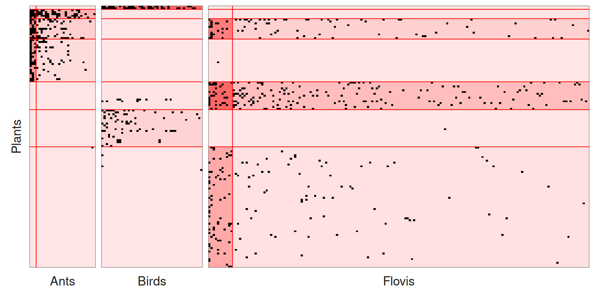

Multipartite Stochastic Block Models
An illustration on a mutualistic ecological network
2026-11-09
Source:vignettes/Multipartite_EcologicalNetwork.qmd
1. Preliminaries
This vignette illustrates the use of the estimateMultipartiteSBM function and the methods accompanying the R6 class MultipartiteSBM_fit.
The only package required for the analysis is sbm:
2. Dataset
2.1 Description of the data
We apply our methodology to an ecological mutualistic multipartite network. The dataset –compiled and conducted by Dáttilo et al. (2016) at Centro de Investigaciones Costeras La Mancha (CICOLMA), located on the central coast of the Gulf of Mexico, Veracruz, Mexico– involves three general types of plant-animal mutualistic interaction: pollination, seed dispersal by frugivorous birds, and protective mutualisms between ants and plants with extrafloral nectaries.
The dataset –which is one of the largest compiled so far with respect to species richness, number of interactions and sampling effort– includes 4 functional groups (FG), namely plants, pollinator species (referred as floral visitors), ant species and frugivorous bird species. Three binary bipartite networks have been collected representing interactions between 1/ plants and florals visitor, 2/ plants and ants, and 3/ plants and seed dispersal birds, resulting into three bipartite networks.
The FG are of respective sizes: plant species, pollinator species, frugivorous bird species and ant species.
The 3 networks contain observed interactions of which are plant-pollinator interactions, are plant-birds interactions and are plant-ant interactions.
data(multipartiteEcologicalNetwork)
str(multipartiteEcologicalNetwork)
#> List of 3
#> $ Inc_plant_ant : int [1:141, 1:30] 0 1 0 0 1 0 1 0 1 0 ...
#> ..- attr(*, "dimnames")=List of 2
#> .. ..$ : chr [1:141] "Acacia_cornigera" "Acacia_macracantha" "Achatocarpus_nigricans" "Agave_angustifolia" ...
#> .. ..$ : chr [1:30] "Camponotus_planatus" "Camponotus_mucronatus" "Paratrechina_longicornis_" "Crematogaster_brevispinosa" ...
#> $ Inc_plant_bird : int [1:141, 1:46] 0 0 1 0 0 0 0 0 0 0 ...
#> ..- attr(*, "dimnames")=List of 2
#> .. ..$ : chr [1:141] "Acacia_cornigera" "Acacia_macracantha" "Achatocarpus_nigricans" "Agave_angustifolia" ...
#> .. ..$ : chr [1:46] "Cyanocorax_morio" "Tyrannus_forficatus" "Ortalis_vetula" "Myiozetetes_similis" ...
#> $ Inc_plant_flovis: int [1:141, 1:173] 0 0 0 0 0 0 0 1 1 0 ...
#> ..- attr(*, "dimnames")=List of 2
#> .. ..$ : chr [1:141] "Acacia_cornigera" "Acacia_macracantha" "Achatocarpus_nigricans" "Agave_angustifolia" ...
#> .. ..$ : chr [1:173] "Apis_melifera" "Lasioglossum_sp1" "Trigona_nigra" "Ascia_monuste" ...
names(multipartiteEcologicalNetwork)
#> [1] "Inc_plant_ant" "Inc_plant_bird" "Inc_plant_flovis"2.2 Formatting the data
We format the data to be able to use our functions, i.e. we transform each matrix into an object containing the matrix, its type (bipartite for an incidence matrix, simple for an adjacency matrix, which can be directed or not), the model and the names of the functional groups in row and in column.
To do so, we use the function defineSBM.
Net <- multipartiteEcologicalNetwork
type = "bipartite"
model = "bernoulli"
directed = FALSE
PlantFlovis <- defineSBM(Net$Inc_plant_flovis, model, type, directed, dimLabels = c("Plants",
"Flovis"))
PlantAnt <- defineSBM(Net$Inc_plant_ant, model, type, directed, dimLabels = c("Plants",
"Ants"))
PlantBird <- defineSBM(Net$Inc_plant_bird, model, type, directed, dimLabels = c("Plants",
"Birds"))If one wants to keep a track of the names of the species, they should be used as rownames and colnames in the matrices.
PlantFlovis$networkData[1:2, 1:2]
#> Apis_melifera Lasioglossum_sp1
#> Acacia_cornigera 0 1
#> Acacia_macracantha 0 0A plot of the data can be obtained with the following command:
plotMyMultipartiteMatrix(list(PlantFlovis, PlantAnt, PlantBird))
3. Multipartite SBM
3.1 Mathematical background
See Bar-Hen et al. (2022) for details.
3.2 Inference
The model selection and the estimation are performed with the function estimateMultipartiteSBM.
estimOptions = list(initBM = FALSE)
listSBM <- list(PlantFlovis, PlantAnt, PlantBird)
myMSBM <- estimateMultipartiteSBM(listSBM, estimOptions)myMSBM contains the estimated parameters of the models we run through during the search of the better numbers of blocks.
myMSBM
#> Fit of a Multipartite Stochastic Block Model
#> 4 parts/functional groups ( Plants Flovis Ants Birds ), 3 networks
#> =====================================================================
#> nbNodes per FG = ( 141 173 30 46 ) -- nbBlocks per FG = ( 7 2 2 1 )
#> distributions on each network: bernoulli bernoulli bernoulli
#> =====================================================================
#> * Useful fields
#> $nbNetwork, $nbNodes, $nbBlocks, $dimLabels, $architecture
#> $modelName, $blockProp, $connectParam, $memberships, $networkData
#> $probMemberships, $loglik, $ICL, $storedModels,
#> * R6 and S3 methods
#> plot, print, coef, predict, fitted, $setModel, $reorder
#> $probMemberships, $loglik, $ICL, $storedModels,
#> * R6 and S3 methods
#> plot, print, coef, predict, fitted, $setModel, $reorderThe best model has the following numbers of blocks:
myMSBM$nbBlocks
#> Plants Flovis Ants Birds
#> 7 2 2 1To see the parameters estimated for the better model we use the following command myMSBM$connectParam or myMSBM$blockProp:
myMSBM$blockProp
#> $Plants
#> [1] 0.01418720 0.03802305 0.07840873 0.16063183 0.10614897 0.13507513 0.46752510
#>
#> $Flovis
#> [1] 0.06221568 0.93778432
#>
#> $Ants
#> [1] 0.1014381 0.8985619
#>
#> $Birds
#> [1] 1
myMSBM$connectParam
#> [[1]]
#> [[1]]$mean
#> [,1] [,2]
#> [1,] 2.464664e-15 4.440892e-16
#> [2,] 1.001131e-15 4.440892e-16
#> [3,] 1.651832e-01 3.427940e-02
#> [4,] 4.173707e-03 8.566580e-08
#> [5,] 1.917898e-01 6.378749e-02
#> [6,] 8.826487e-07 3.317267e-04
#> [7,] 9.573240e-02 7.490241e-03
#>
#>
#> [[2]]
#> [[2]]$mean
#> [,1] [,2]
#> [1,] 5.366301e-15 1.107167e-15
#> [2,] 8.491907e-01 3.564830e-01
#> [3,] 6.620266e-01 1.542027e-01
#> [4,] 5.430946e-01 5.891885e-02
#> [5,] 7.172257e-16 4.440892e-16
#> [6,] 5.721732e-16 4.440892e-16
#> [7,] 4.440892e-16 5.576222e-04
#>
#>
#> [[3]]
#> [[3]]$mean
#> [,1]
#> [1,] 5.108074e-01
#> [2,] 4.440892e-16
#> [3,] 4.440892e-16
#> [4,] 4.440892e-16
#> [5,] 1.625224e-02
#> [6,] 7.534085e-02
#> [7,] 1.253527e-03The clusterings supplied by the better model are in myMSBM$memberships$***.
myMSBM$storedModels
#> indexModel nbParams nbBlocks Plants nbBlocks Flovis nbBlocks Ants
#> 1 1 43 7 2 2
#> 2 2 37 6 2 2
#> 3 3 31 5 2 2
#> 4 4 25 5 2 1
#> 5 5 19 5 1 1
#> 6 6 15 4 1 1
#> 7 7 11 3 1 1
#> 8 8 7 2 1 1
#> 9 9 3 1 1 1
#> nbBlocks Birds nbBlocks ICL loglik
#> 1 1 12 -2961.903 -2770.230
#> 2 1 11 -2965.539 -2800.546
#> 3 1 10 -2981.164 -2840.532
#> 4 1 9 -3017.651 -2897.765
#> 5 1 8 -3071.369 -2984.442
#> 6 1 7 -3128.286 -3057.690
#> 7 1 6 -3216.136 -3161.801
#> 8 1 5 -3358.851 -3326.480
#> 9 1 4 -3582.348 -3568.7334. Plots
We can either plot the reorganized matrices, the background of each block being colored according to its density:
plot(myMSBM)
the expected connections:
plot(myMSBM, type = "expected")
or the mesoscopic view, where each block is a node and each connectivity an edge. The functional groups are distinguished by the colors of the nodes, and the labels of the blocks start with the name of their functional group (P for plants, F for floral visitors…). Within each functional group, the area of the nodes is proportional to the block proportions. The width and the color of the edges grow with the probability of connection between the blocks. The blocks are placed according to their connections (blocks strongly connected are close), whatever their functional group; this layout being random, it is fixed with the option seed.

Many connectivities are close to zero. They can be removed with edge.threshold, which makes the structure clearer: the plants of blocks 2, 3 and 4 interact with the ants, the plants of blocks 3, 5 and 7 with the floral visitors, and the plants of blocks 1 and 6 with the birds.

The blocks can also be arranged with one row per functional group (layout = "groups"), and the colors of the functional groups chosen with vertex.color:
plot(myMSBM, type = "meso",
plotOptions = list(layout = "groups", edge.threshold = 0.05,
vertex.color = c("darkolivegreen3", "darkgoldenrod2", "mediumpurple2", "cadetblue2")))
Finally, the coordinates of the blocks are returned in the attribute blockLayout of the plot. They can be modified (here, the block F2 is moved next to F1) and given back with the option layout:
g <- plot(myMSBM, type = "meso", plotOptions = list(seed = 1, edge.threshold = 0.05))
myLayout <- attr(g, "blockLayout")
head(myLayout)
#> x y
#> P1 4.950862 -2.8378181
#> P2 3.839142 0.8090767
#> P3 2.242557 -0.4697098
#> P4 1.851337 0.8328752
#> P5 1.480221 -2.9666574
#> P6 5.693049 -0.4781445
myLayout["F2", ] <- myLayout["F1", ] - c(1, 0)
plot(myMSBM, type = "meso", plotOptions = list(layout = myLayout, edge.threshold = 0.05))
All the options are described in ?plot.SBM.